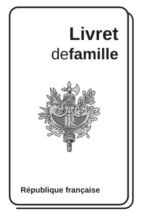
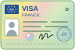
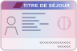
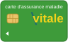

Your husband or wife is French and you are moving to France together. This page sums up the steps that concern you: the order of the steps, residence permit, French classes, health insurance, work, bank and family benefits, children and driving licence.
Information checked in October 2026 on official French websites. Rules change regularly: always check the links below. In case of doubt, the French version of the guide is the reference.
Start early: the right order

Your spouse visa depends on documents that can take several months to obtain. Start about 6 months before your planned departure.
- First, have your marriage registered in France. A marriage celebrated abroad must be transcribed in the French civil register (by the French consulate or, for some countries, the central civil registry in Nantes). Without this transcription, you cannot apply for a visa as the spouse of a French national. It can take from a few weeks to several months. Once it is done, your spouse can obtain a French family record book (livret de famille).
- Then apply for your long-stay visa at the French consulate in your country of residence.
- Meanwhile, gather your documents: passport, full birth certificate with an official translation, marriage certificate, diplomas and work certificates.
Your residence permit

- Before leaving: apply at the French consulate for a long-stay visa as the spouse of a French national (VLS-TS). It is valid for one year and works as a residence permit.
- Within 3 months of arrival: validate your visa online on the ANEF website (French government portal for foreigners). Without this step, your stay is no longer legal.

Before the end of the first year: apply online for a multi-year residence card “private and family life” (vie privée et familiale), between 4 and 2 months before your visa expires.- Conditions: you must actually live together, your spouse must have been French on the day of your marriage, and a marriage celebrated abroad must be registered (transcribed) by the French consulate.
Integration contract and French classes
As a non-European national settling in France for the first time, you will be invited by the French Office for Immigration and Integration (OFII) to sign a Republican Integration Contract (CIR). It includes a French language test and, if your level is below A2, French classes (600 hours, in a classroom or online), as well as civic training on life in France.
Health insurance

- If you work in France: you are covered from your first hour of work. Send the form S1106 to the local health insurance office (CPAM) with your employment contract or a payslip.
- If you do not work: you are entitled to health insurance (PUMA) on the basis of stable residence, in principle after 3 months in France. Some family situations are exempted from this waiting period: ask your CPAM.
- In the meantime: take out private health insurance so that you are not left without cover.
- Once registered: create your Ameli account, order your Carte Vitale (health card) and choose a médecin traitant (regular doctor) to be properly reimbursed.
- Your social security number: if you were born abroad, you first receive a provisional number. Your permanent number is assigned by a specialised INSEE service after checking your civil status documents: count at least 2 months, sometimes much longer. You are covered in the meantime, but you cannot get a Carte Vitale or an Ameli account until then. Keep your translated birth certificate at hand.2Sex: 1 man, 2 woman85Year of birth08Month of birth99Born abroad (otherwise: département)134Country of birth, here Spain (otherwise: town)456Order number12Check key
Example: a woman born in Spain in August 1985. Source: service-public.fr
Working in France
- Your long-stay visa or “private and family life” residence card allows you to work: your employer does not need to apply for a work permit.
- To look for a job, register with France Travail (the public employment service) once you have an address in France.
- To have a foreign diploma recognised, ask the ENIC-NARIC centre for a statement of comparability.

Bank account and family benefits
- Bank account: with your passport and visa or residence permit, you can open an account in your own name. If a bank refuses, the Banque de France can designate a bank that must open a basic account for you, free of charge (droit au compte).
- Family benefits (CAF): housing aid and family benefits are calculated on the resources of the whole household, including yours. Declare your income and send the CAF a copy of your residence permit, and of each renewal.
 service-public.fr — right to a bank account (English)
service-public.fr — right to a bank account (English)
Your children
- A child under 18 of foreign nationality does not need a residence permit, but a travel document for foreign minors (DCEM) makes travelling outside France easier.
- A child aged 18 or over must apply for their own residence permit within 2 months of arrival.
- For school registration, see the “Scolarité” section of the French guide.
Driving licence
A driving licence issued outside the European Union is valid in France for 1 year after you settle. During that year, you can exchange it for a French licence if France has an exchange agreement with the country (or US state) that issued it. Otherwise, you will have to take the French driving test.
Words you will come across
 Ameli
Ameli- Website and online account of the French national health insurance.
 ANEF (Administration numérique pour les étrangers en France)
ANEF (Administration numérique pour les étrangers en France)- Government website for all residence permit procedures for foreigners.
 CAF (Caisse d'allocations familiales)
CAF (Caisse d'allocations familiales)- Family allowance office: housing aid and family benefits.
- Carte Vitale
- Health insurance card used for direct reimbursement of medical care.
- CIR (Contrat d'intégration républicaine)
- Republican Integration Contract, signed with OFII: French classes and civic training.
- CPAM (Caisse primaire d'assurance maladie)
- Local health insurance office.
- DCEM (Document de circulation pour étranger mineur)
- Travel document for foreign minors living in France.
 France Travail
France Travail- Public employment service (formerly Pôle emploi).
- Livret de famille
- French family record book, issued once your marriage is registered in France.
- Mairie
- Town hall: civil status, school registration, social services (CCAS).
- NIR (Numéro d'inscription au répertoire)
- Social security number (13 digits plus a key).
 OFII (Office français de l'immigration et de l'intégration)
OFII (Office français de l'immigration et de l'intégration)- French Office for Immigration and Integration.
- Préfecture
- State office in each département; delivers residence cards.
- PUMA (Protection universelle maladie)
- Universal health insurance, based on work or stable residence in France.
- Titre de séjour
- Residence permit.
- VLS-TS (Visa de long séjour valant titre de séjour)
- Long-stay visa that also works as a residence permit; must be validated online within 3 months of arrival.
If you are in danger
This button, or pressing Escape twice, immediately opens the Google home page.
Violence in a couple or a family (physical, psychological, sexual, financial, or someone taking your papers) is a crime in France. You can get help, whatever your nationality.
- Immediate danger: 17 (police) or 112 112 operators speak French or English. If you cannot speak because the person is near you, send a text message to 114 with your name, your exact address and what is happening.
- 3919 – Violences Femmes Info: 3919 Free, anonymous, 24 hours a day, 7 days a week; the call does not appear on your phone bill. Interpreters are available in more than 200 languages. It offers listening and advice, but it is not an emergency number.
- 116 006 – victim support: 116 006 Free, every day from 9 am to 8 pm.
- Emergency accommodation: 115
- Protection order: you can ask the family judge (juge aux affaires familiales) for a protection order, even without filing a complaint first. In case of serious and immediate danger, the judge decides within 24 hours. It lasts up to 12 months. If you obtain one, you receive a temporary residence card. Depending on your income, legal aid (aide juridictionnelle) can cover your lawyer's and interpreter's fees.
- Keep copies of your passport, residence permit and marriage certificate in an email account that only you know.
Getting help
- France services — offices all over France where staff help you with administrative procedures, in person and free of charge. france-services.gouv.fr (French)
- Allô Service public (general administrative information, in French): 3939 · from abroad: +33 1 73 60 39 39 (landline only) Paris time: Mon and Thu 8:30–18:15, Tue and Wed 8:30–13:00, Fri 13:00–17:00
- Health insurance (in French): 3646 · from abroad: +33 1 84 90 36 46 Paris time: Mon–Fri 8:30–17:00